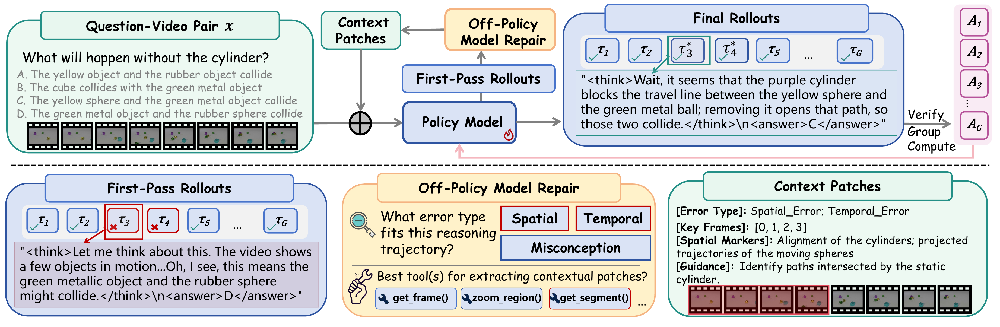
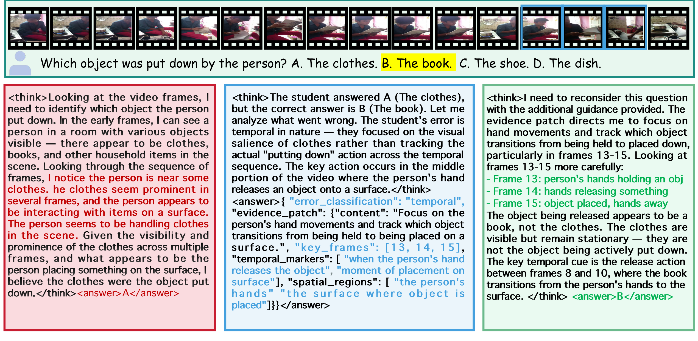
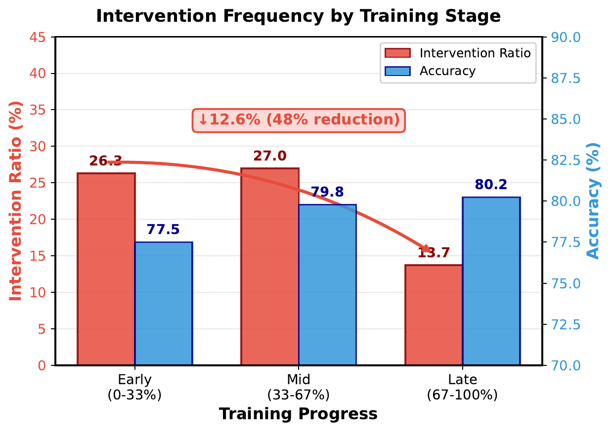
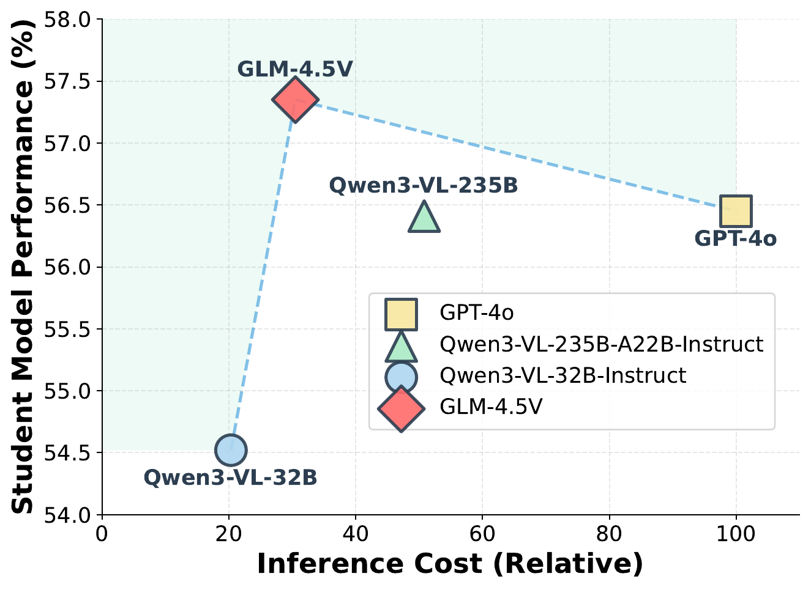
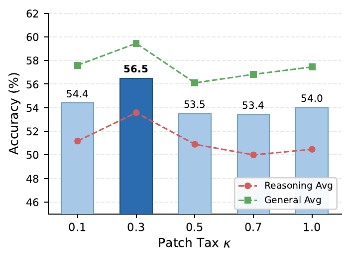
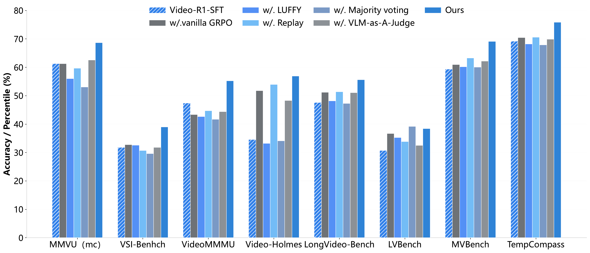
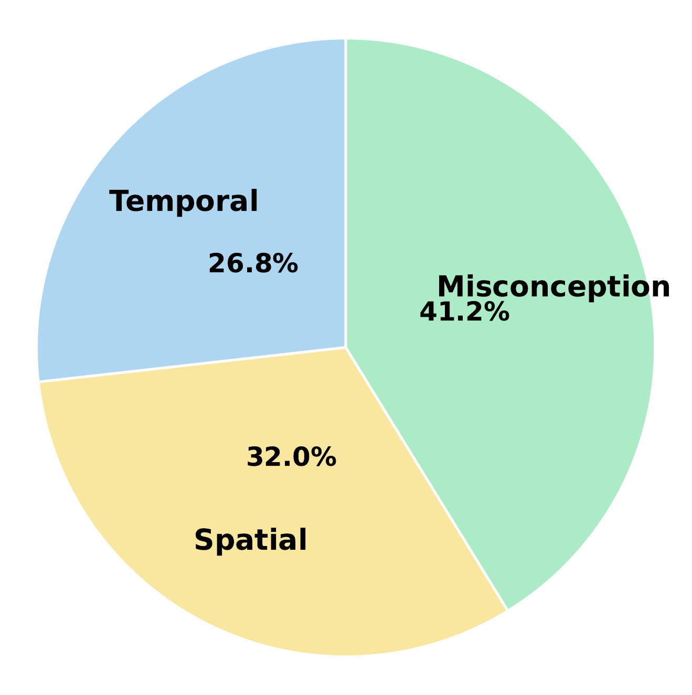

On-Policy RL
The student only learns from its own sampled rollouts, so progress depends on what it can already discover by itself.
Reinforcement learning has improved video reasoning, but existing pipelines either depend on self-exploration that saturates at the model's own capability ceiling, or mix off-policy guidance in ways that complicate optimization. FFR introduces an observation-level intervention: when a rollout fails, a frozen tool-integrated teacher identifies the missing spatiotemporal dependency and returns a minimal evidence patch from the original video. The student then answers again with the added context, and GRPO updates are applied to the repaired trajectory through a robust improvement reward. Across multiple video reasoning and general video benchmarks, this produces consistent accuracy gains while preserving the benefits of on-policy exploration.
Method Overview

A frozen teacher inspects incorrect rollouts and classifies what the student missed, such as temporal order, spatial relation, or task misconception.
The patch points to key frames, temporal markers, or regions from the original video while avoiding direct answer clues.
The same policy re-answers with the patch. GRPO then updates on the original correct rollout or the repaired rollout, with a patch tax controlling reliance on guidance.
Key Findings
Compared with Video-R1-SFT, FFR with GLM-4.5V lifts the eight-benchmark average from 47.8 to 56.5.
FFR with a 32B teacher reaches a 51.2 reasoning average, surpassing SFT with a 235B teacher at 50.7.
Removing visual context drops Video-Holmes from 52.3 to 42.3, showing that key-frame and spatial cues are central to the repair.
Structured output constraints plus negative prompting reduce manually verified direct and partial leakage to 0%.
Main Results
The main table compares video reasoning benchmarks and general video understanding benchmarks. FFR improves the corresponding Video-R1 and VideoRFT training baselines across every reported metric.
| Model | MMVU | VSI-Bench | VideoMMMU | Video-Holmes | LongVideoBench | LVBench | MVBench | TempCompass |
|---|---|---|---|---|---|---|---|---|
| GPT-4o | 75.4 | 34.0 | 61.2 | 42.0 | 58.5 | 48.9 | 64.6 | 73.75 |
| Video-R1-SFT | 61.3 | 31.8 | 47.4 | 34.6 | 47.6 | 30.7 | 59.4 | 69.2 |
| Video-R1 | 63.8 | 35.8 | 52.3 | 36.5 | 52.7 | 35.3 | 63.9 | 73.2 |
| FFR + Video-R1 | 68.5 | 38.9 | 54.6 | 52.3 | 55.3 | 38.1 | 68.8 | 75.6 |
| VideoRFT-SFT | 60.5 | 31.7 | 48.5 | 27.1 | 47.3 | 26.9 | 57.0 | 68.4 |
| VideoRFT | 68.5 | 36.8 | 51.1 | 40.0 | 52.5 | 33.9 | 62.1 | 73.7 |
| FFR + VideoRFT | 70.1 | 38.6 | 54.9 | 48.0 | 54.9 | 37.8 | 68.2 | 75.4 |
Visual Evidence






Please cite the paper if you use FFR or the released code.
@misc{huang2026findfixreason,
title={Find, Fix, Reason: Context Repair for Video Reasoning},
author={Huang, Haojian and Qin, Chuanyu and Li, Yinchuan and Chen, Yingcong},
year={2026},
eprint={2604.16243},
archivePrefix={arXiv},
primaryClass={cs.CV},
doi={10.48550/arXiv.2604.16243},
url={https://arxiv.org/abs/2604.16243}
}